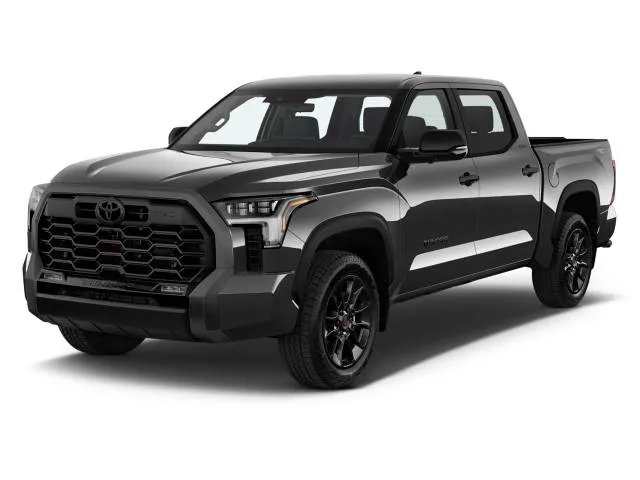

شاحنة بيك أب كاملة الحجم، توفر قوة سحب عالية وتقنيات حديثة مع اعتمادية تويوتا.
| المحرك | 3.4 لتر V6 توين تيربو + هجين |
| عدد الأسطوانات | 6 |
| القوة | 437 حصان |
| عزم الدوران | 790 نيوتن متر |
| ناقل الحركة | 10 سرعات أوتوماتيك |
| نظام الدفع | رباعي 4WD |
| التسارع (0-100) | 6.1 ثانية |
| السرعة القصوى | 180 كم/س |
| عدد المقاعد | 5 |
| نوع الوقود | بنزين / هجين |